Boundary Marker
The Permian-Triassic boundary marks the dividing line between the world before the catastrophe and the reorganized Earth that followed.
A class site on the Permian-Triassic extinction, the Siberian Traps, and the collapse and recovery of life at 252 Ma.
Overview
Welcome to the boundary of the Permian and Triassic periods, about 252 million years ago. This was the time of the “Great Dying,” the most severe extinction event in Earth's history.
The crisis wiped out roughly 80% to 90% of marine and terrestrial genera and brought the Paleozoic Era to a violent close. The main driver was not an asteroid, but a massive volcanic event from within the Earth: the Siberian Traps.
The Permian-Triassic boundary marks the dividing line between the world before the catastrophe and the reorganized Earth that followed.
The Siberian Traps were a planetary-scale volcanic outpouring that triggered extreme environmental change across the globe.
The next tabs move through the scale of the eruptions, the “planetary fuel cell” mechanism, the extinction itself, and the long recovery that followed.
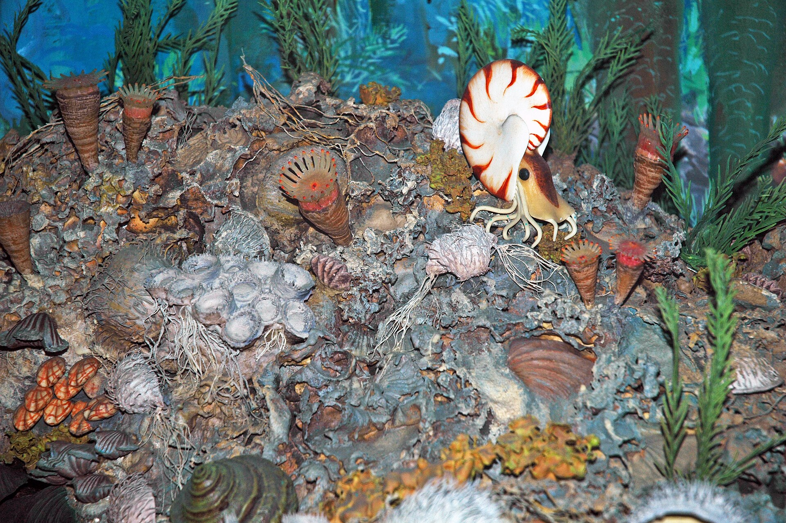
Timeline View
This built-in timeline gives the home tab a visual center. It summarizes the story arc before the deeper tab-by-tab sections begin.
Stable Paleozoic ecosystems dominated land and sea before the crisis broke that balance.
Flood-basalt eruptions spread across Siberia and injected extreme energy into the Earth system.
Warming, acidification, and oxygen-poor oceans pushed the biosphere into the Great Dying.
Earth did not rebound quickly. Survivors rebuilt ecosystems over a long unstable recovery.
Geological Scale
The Siberian Traps were the largest volcanic outpouring in the Phanerozoic record. This was not one volcano, but a massive flood-basalt event where the crust opened and lava spread across a huge region of Pangea.
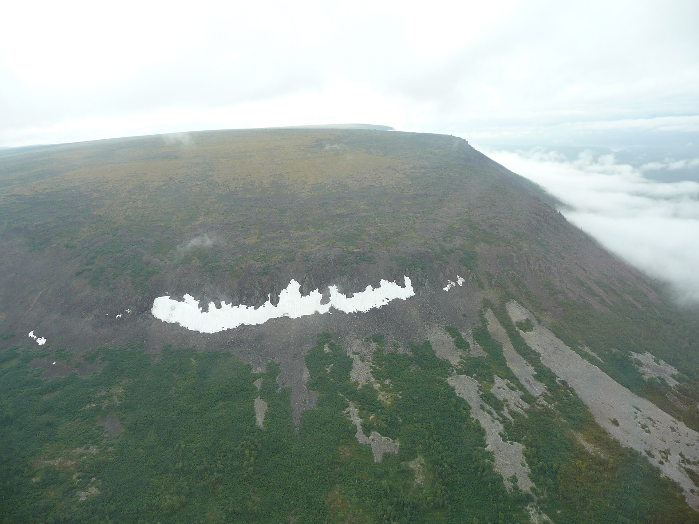
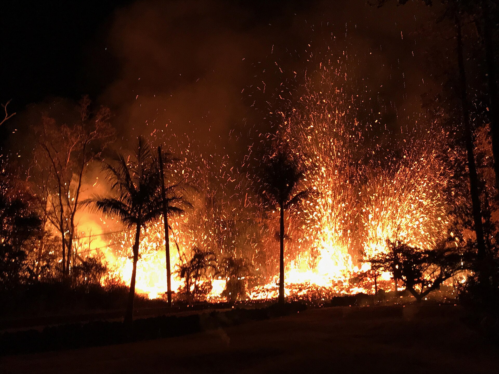
More than 2 million km3 of lava erupted. That is enough material to bury a continent-scale region under basalt.
The event shows that Earth's history is not only gradual change. Catastrophes can redirect the planet and permanently alter its biosphere.
The Siberian Traps were not a single volcanic peak. They formed a vast igneous province, which is why maps and regional scale matter so much in understanding the event.
Scale Visual
This visual is meant to make the tab feel planetary in scale. It moves from a local volcanic source to a continent-scale lava outpouring and then to global system disruption.
A single eruption can reshape a region, but it stays geographically limited.
The crust opens, lava spreads outward, and the event stops looking like one mountain.
At this scale, volcanism becomes an Earth-system event with biosphere-level consequences.
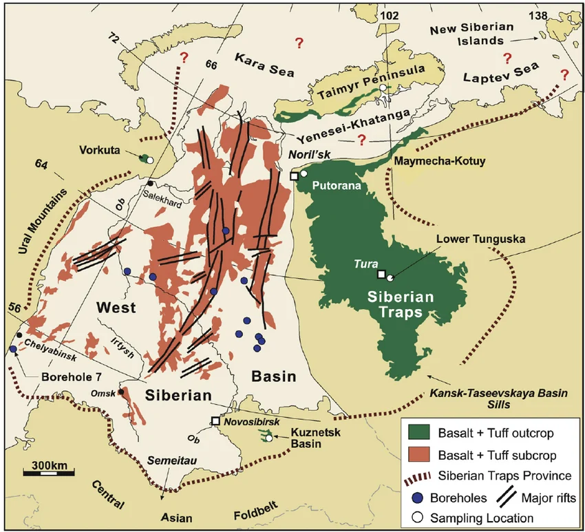
Regional flood-basalt map
The province covered a vast region of Siberia, turning a volcanic event into a continent-scale feature of the map.
Mechanism
The Siberian lavas did not erupt through empty rock. Magma moved through coal-rich and carbonate-rich sediments, turning the crust itself into a massive source of greenhouse gases.
Reaction Chain
The eruption acted like an uncontrolled release of stored chemical energy. Heat from the magma destabilized buried carbon, and the atmosphere and ocean absorbed the consequences.
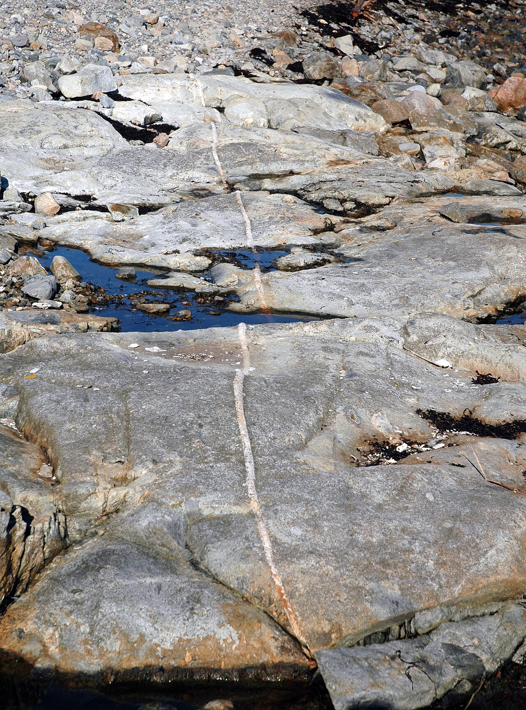
Dikes and sills pushed hot magma into the sedimentary crust.
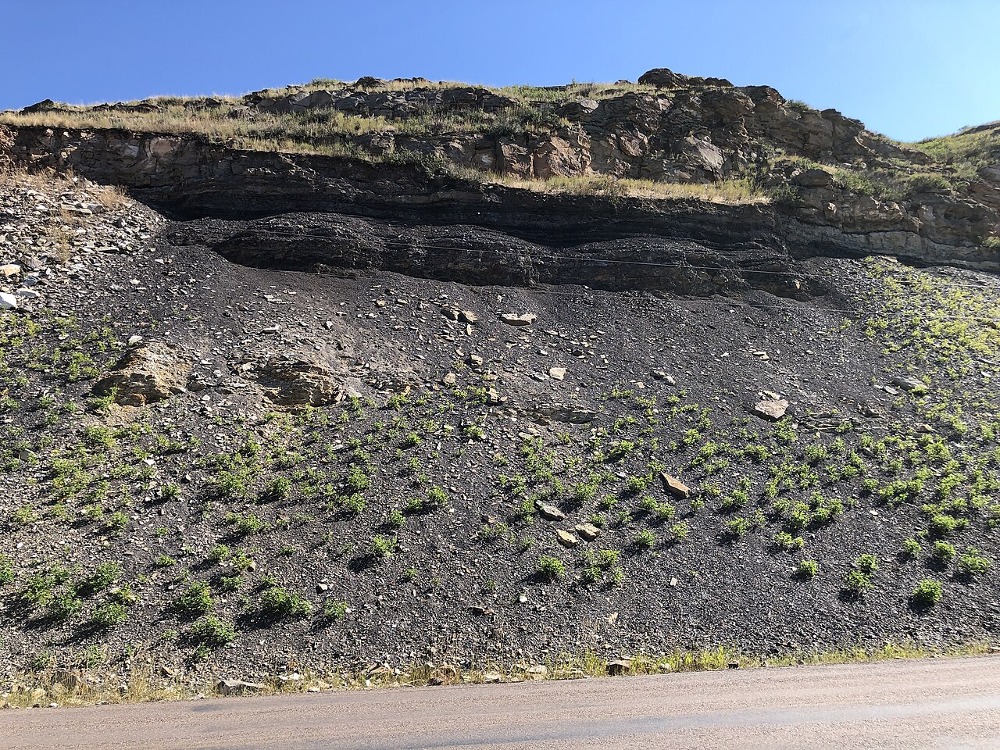
Coal-rich and carbonate-rich layers heated until carbon was released.
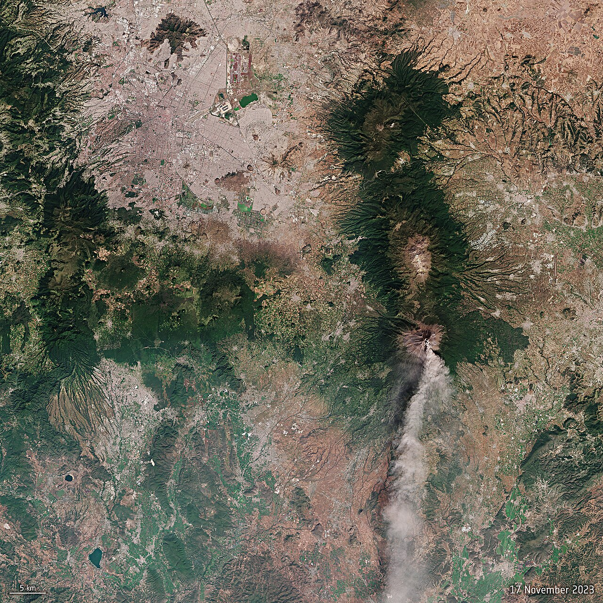
CO2 and methane entered the atmosphere in huge amounts.
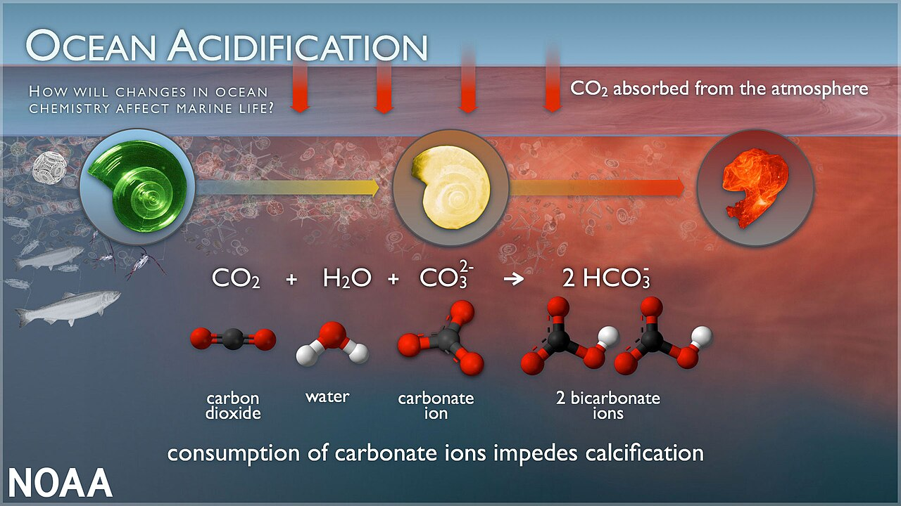
Warming, acidification, and low oxygen made marine ecosystems unstable.
Buried sediments supplied the chemical fuel.
Released gases pushed the climate system toward extreme warming.
Marine animals faced chemical stress along with heat.
Diagram Focus
The key idea is not just eruption at the surface. Magma also moved sideways through buried layers and heated the carbon stored inside them.
Biological Impact
The environmental collapse caused by the Siberian Traps spared almost no part of the biosphere. The Great Dying marks a major dividing line between the older Paleozoic world and the more modern faunas that followed.
Extinction Boundary
Heat, acidification, and oxygen loss combined into a global biological crisis. The extinction was severe enough to separate the Paleozoic Era from the Mesozoic world that followed.
Marine ecosystems still carried a recognizable Paleozoic style, with long-established lineages filling stable ecological roles.
The crisis cleared out old communities and shifted Earth toward more modern marine faunas.
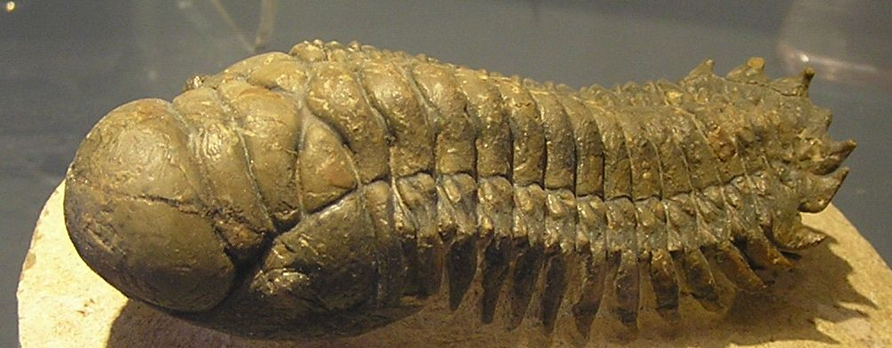
Fossil Marker
Trilobites had survived since the Cambrian and lasted for about 300 million years. At the Permian-Triassic extinction, that lineage disappeared completely.
Recovery
After the catastrophe, Earth was depleted and ecologically unstable. Recovery was slow, and the few survivors that remained became especially important for understanding the new world that followed.
Recovery Path
The extinction opened ecological space, but the first tens of millions of years of the Triassic were unstable. Recovery was a long rebuild rather than a quick rebound.
Most ecosystems were stripped down.
A few hardy lineages carried life forward.
Empty ecospace created room for new adaptations.
Triassic ecosystems gradually reorganized.
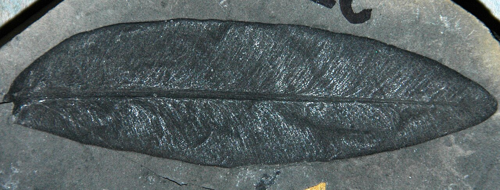
Loss
Glossopteris forests dominated much of the southern hemisphere before the extinction. Their collapse marks a major ecological reset and helps explain the post-extinction coal gap.
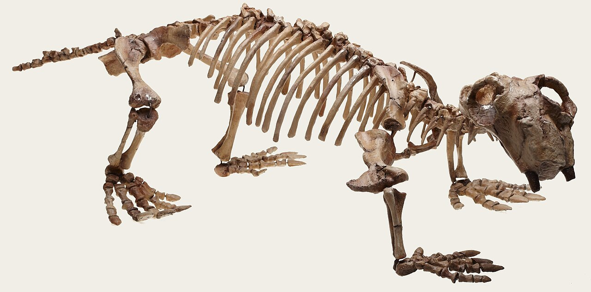
Survivor
Lystrosaurus survived the extinction and became common in the depleted landscapes that followed. Its fossils also helped show that Africa, India, and Antarctica were once joined in Pangea.
Sources
Core course sources used to build the site content, organized by how they support the Siberian Traps story.
Chapter 17 — Planetary Evolution: The Importance of Catastrophes and the Question of Directionality
Main chapter for the Siberian Traps, the Permian-Triassic extinction, and the idea of catastrophe changing planetary evolution.
Chapter 15 — planetary fuel cell / mechanism
Chapter 14 — extinction and biological loss
Chapter 10 — Pangea and Lystrosaurus context
HabitableEchapt1.pdf
How to Build a Habitable Planet by Charles
Langmuir and Wally Broecker
These are the course/book sources the website content is drawn from. Planning docs are not listed as references.
Image References
James St. John, Diorama of a Permian seafloor, Wikimedia Commons / Flickr, CC BY 2.0.
View image sourcejxandreani, Plato Putorana 03, Wikimedia Commons / Flickr, CC BY 2.0.
View image sourceUnited States Geological Survey, Kilauea eastern rift zone fissure eruption May 2018, Wikimedia Commons, public domain.
View image sourceReichow et al. (2009), The timing and extent of the eruption of the Siberian Traps large igneous province: Implications for the end-Permian environmental crisis, Fig. 1, via ResearchGate.
View figure sourceJames St. John, Dike in metatuffs, Wikimedia Commons / Flickr, CC BY 2.0.
View image sourceKenneth Carpenter, Belt coal seam, Wikimedia Commons, CC BY-SA 4.0.
View image sourceEuropean Space Agency, Smoke plume from Popocatepetl volcano, Wikimedia Commons / Copernicus Sentinel data, attribution required.
View image sourceNOAA, A pteropod shell is shown dissolving over time, Wikimedia Commons, public domain.
View image sourceYtrottier, Crotalocephalus Trottier, Wikimedia Commons, CC BY-SA 3.0 / GFDL.
View image sourceJames St. John, Glossopteris sp. fossil leaf, Wikimedia Commons / Flickr, CC BY 2.0.
View image sourceJon Augier, Museums Victoria, Lystrosaurus georgi mounted skeleton, Wikimedia Commons, CC BY 4.0.
View image source